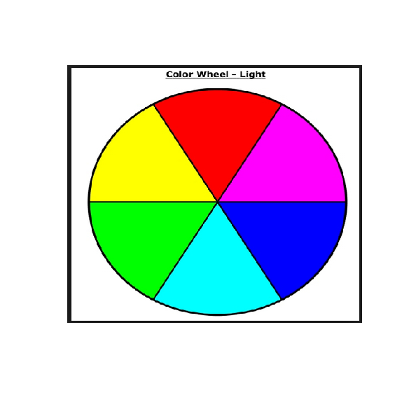
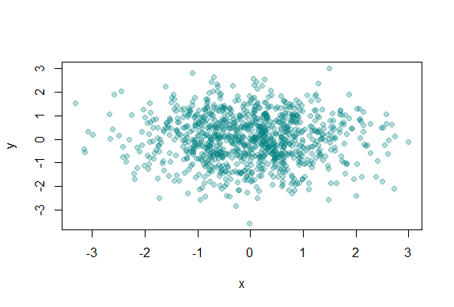

Working with Colors
R version 4.0.0 (2020-04-24) -- "Arbor Day"
Copyright (C) 2020 The R Foundation for Statistical Computing
Platform: x86_64-w64-mingw32/x64 (64-bit)
R is free software and comes with ABSOLUTELY NO WARRANTY.
You are welcome to redistribute it under certain conditions.
Type 'license()' or 'licence()' for distribution details.
Natural language support but running in an English locale
R is a collaborative project with many contributors.
Type 'contributors()' for more information and
'citation()' on how to cite R or R packages in publications.
Type 'demo()' for some demos, 'help()' for on-line help, or
'help.start()' for an HTML browser interface to help.
Type 'q()' to quit R.
setwd("C:/Users/kk/Downloads/edu/DataScienceJHU/DataScienceWithR/04_Exploratory_Data_Analysis/workspace")
library(ggplot2)
library(swirl)
| Hi! Type swirl() when you are ready to begin.
swirl()
| Welcome to swirl! Please sign in. If you've been here before, use the same name as
| you did then. If you are new, call yourself something unique.
What shall I call you? Krishnakanth Allika
| Please choose a course, or type 0 to exit swirl.
1: Exploratory Data Analysis
2: Take me to the swirl course repository!
Selection: 1
| Please choose a lesson, or type 0 to return to course menu.
1: Principles of Analytic Graphs 2: Exploratory Graphs
3: Graphics Devices in R 4: Plotting Systems
5: Base Plotting System 6: Lattice Plotting System
7: Working with Colors 8: GGPlot2 Part1
9: GGPlot2 Part2 10: GGPlot2 Extras
11: Hierarchical Clustering 12: K Means Clustering
13: Dimension Reduction 14: Clustering Example
15: CaseStudySelection: 7
| Attempting to load lesson dependencies...
| Package ‘jpeg’ loaded correctly!
| Package ‘RColorBrewer’ loaded correctly!
| Package ‘datasets’ loaded correctly!
| | 0%
| Working_with_Colors. (Slides for this and other Data Science courses may be found at
| github https://github.com/DataScienceSpecialization/courses/. If you care to use
| them, they must be downloaded as a zip file and viewed locally. This lesson
| corresponds to 04_ExploratoryAnalysis/Colors.)
...
|= | 1%
| This lesson is about using colors in R. It really supplements the lessons on
| plotting with the base and lattice packages which contain functions that are able to
| take the argument col. We'll discuss ways to set this argument more colorfully.
...
|== | 3%
| Of course, color choice is secondary to your data and how you analyze it, but
| effectively using colors can enhance your plots and presentations, emphasizing the
| important points you're trying to convey.
...
|=== | 4%
| The motivation for this lesson is that the default color schemes for most plots in R
| are not optimal. Fortunately there have been recent developments to improve the
| handling and specification of colors in plots and graphs. We'll cover some functions
| in R as well as in external packages that are very handy. If you know how to use
| some of these then you'll have more options when you create your displays.
...
|==== | 6%
| We'll begin with a motivating example - a typical R plot using 3 default colors.
...
|====== | 7%
| According to the plot, what is color 2?
1: Blue
2: Empty black circles
3: Red
4: Green
Selection: 3
| Nice work!
|======= | 9%
| So these are the first 3 default values. If you were plotting and just specified
| col=c(1:3) as one of your arguments, these are colors you'd get. Maybe you like
| them, but they might not be the best choice for your application.
...
|======== | 10%
| To show you some options, here's a display of two color palettes that come with the
| grDevices package available to you. The left shows you some colors from the function
| heat.colors. Here low values are represented in red and as the values increase the
| colors move through yellow towards white. This is consistent with the physical
| properties of fire. The right display is from the function topo.colors which uses
| topographical colors ranging from blue (low values) towards brown (higher values).

...
|========= | 12%
| So we'll first discuss some functions that the grDevices package offers. The
| function colors() lists the names of 657 predefined colors you can use in any
| plotting function. These names are returned as strings. Run the R command sample
| with colors() as its first argument and 10 as its second to give you an idea of the
| choices you have.
sample(colors(),10)
[1] "gray1" "darkorchid2" "blue3" "darkorchid3" "gray10"
[6] "firebrick1" "magenta3" "gray75" "lemonchiffon4" "rosybrown3"
| Great job!
|========== | 13%
| We see a lot of variety in the colors, some of which are names followed by numbers
| indicating that there are multiple forms of that particular color.
...
|=========== | 14%
| So you're free to use any of these 600+ colors listed by the colors function.
| However, two additional functions from grDevices, colorRamp and colorRampPalette,
| give you more options. Both of these take color names as arguments and use them as
| "palettes", that is, these argument colors are blended in different proportions to
| form new colors.
...
|============ | 16%
| The first, colorRamp, takes a palette of colors (the arguments) and returns a
| function that takes values between 0 and 1 as arguments. The 0 and 1 correspond to
| the extremes of the color palette. Arguments between 0 and 1 return blends of these
| extremes.
...
|============= | 17%
| Let's see what this means. Assign to the variable pal the output of a call to
| colorRamp with the single argument, c("red","blue").
pal<-colorRamp(c("red","blue"))
| You are amazing!
|=============== | 19%
| We don't see any output, but R has created the function pal which we can call with a
| single argument between 0 and 1. Call pal now with the argument 0.
pal(0)
[,1] [,2] [,3]
[1,] 255 0 0
| You are quite good my friend!
|================ | 20%
| We see a 1 by 3 array with 255 as the first entry and 0 in the other 2. This 3 long
| vector corresponds to red, green, blue (RGB) color encoding commonly used in
| televisions and monitors. In R, 24 bits are used to represent colors. Think of these
| 24 bits as 3 sets of 8 bits, each of which represents an intensity for one of the
| colors red, green, and blue.
...
|================= | 22%
| The 255 returned from the pal(0) call corresponds to the largest possible number
| represented with 8 bits, so the vector (255,0,0) contains only red (no green or
| blue), and moreover, it's the highest possible value of red.
...
|================== | 23%
| Given that you created pal with the palette containing "red" and "blue", what color
| do you think will be represented by the vector that pal(1) returns? Recall that pal
| will only take arguments between 0 and 1, so 1 is the largest argument you can pass
| it.
1: blue
2: red
3: green
4: yellow
Selection: 1
| Keep up the great work!
|=================== | 25%
| Check your answer now by calling pal with the argument 1.
pal(1)
[,1] [,2] [,3]
[1,] 0 0 255
| Excellent work!
|==================== | 26%
| You see the vector (0,0,255) which represents the highest intensity of blue. What
| vector do you think the call pal(.5) will return?
1: (0,255,0)
2: (255,255,255)
3: (127.5,0,127.5)
4: (255,0,255)
Selection: 3
| You got it!
|===================== | 28%
| The function pal can take more than one argument. It returns one 3-long (or 4-long,
| but more about this later) vector for each argument. To see this in action, call pal
| with the argument seq(0,1,len=6).
pal(seq(0,1,len=6))
[,1] [,2] [,3] [1,] 255 0 0 [2,] 204 0 51 [3,] 153 0 102 [4,] 102 0 153 [5,] 51 0 204 [6,] 0 0 255| Nice work!
|====================== | 29%
| Six vectors (each of length 3) are returned. The i-th vector is identical to output
| that would be returned by the call pal(i/5) for i=0,...5. We see that the i-th row
| (for i=1,...6) differs from the (i-1)-st row in the following way. Its red entry is
| 51 = 255/5 points lower and its blue entry is 51 points higher.
...
|======================= | 30%
| So pal creates colors using the palette we specified when we called colorRamp. In
| this example none of pal's outputs will ever contain green since it wasn't in our
| initial palette.
...
|========================= | 32%
| We'll turn now to colorRampPalette, a function similar to colorRamp. It also takes a
| palette of colors and returns a function. This function, however, takes integer
| arguments (instead of numbers between 0 and 1) and returns a vector of colors each
| of which is a blend of colors of the original palette.
...
|========================== | 33%
| The argument you pass to the returned function specifies the number of colors you
| want returned. Each element of the returned vector is a 24 bit number, represented
| as 6 hexadecimal characters, which range from 0 to F. This set of 6 hex characters
| represents the intensities of red, green, and blue, 2 characters for each color.
...
|=========================== | 35%
| To see this better, assign to the variable p1 the output of a call to
| colorRampPalette with the single argument, c("red","blue"). We'll compare it to our
| experiments using colorRamp.
p1<-colorRampPalette(c("red","blue"))
| You got it!
|============================ | 36%
| Now call p1 with the argument 2.
p1(2)
[1] "#FF0000" "#0000FF"
| All that hard work is paying off!
|============================= | 38%
| We see a 2-long vector is returned. The first entry FF0000 represents red. The FF is
| hexadecimal for 255, the same value returned by our call pal(0). The second entry
| 0000FF represents blue, also with intensity 255.
...
|============================== | 39%
| Now call p1 with the argument 6. Let's see if we get the same result as we did when
| we called pal with the argument seq(0,1,len=6).
p1(6)
[1] "#FF0000" "#CC0033" "#990066" "#650099" "#3200CC" "#0000FF"
| You are amazing!
|=============================== | 41%
| Now we get the 6-long vector (FF0000, CC0033, 990066, 650099, 3200CC, 0000FF). We
| see the two ends (FF0000 and 0000FF) are consistent with the colors red and blue.
| How about CC0033? Type 0xcc or 0xCC at the command line to see the decimal
| equivalent of this hex number. You must include the 0 before the x to specify that
| you're entering a hexadecimal number.
0xCC
[1] 204
| You are amazing!
|================================ | 42%
| So 0xCC equals 204 and we can easily convert hex 33 to decimal, as in
| 0x33=3*16+3=51. These were exactly the numbers we got in the second row returned
| from our call to pal(seq(0,1,len=6)). We see that 4 of the 6 numbers agree with our
| earlier call to pal. Two of the 6 differ slightly.
...
|================================= | 43%
| We can also form palettes using colors other than red, green and blue. Form a
| palette, p2, by calling colorRampPalette with the colors "red" and "yellow".
| Remember to concatenate them into a single argument.
p2<-colorRampPalette(c("red","yellow"))
| You are really on a roll!
|=================================== | 45%
| Now call p2 with the argument 2. This will show us the two extremes of the blends of
| colors we'll get.
p2(2)
[1] "#FF0000" "#FFFF00"
| Excellent work!
|==================================== | 46%
| Not surprisingly the first color we see is FF0000, which we know represents red. The
| second color returned, FFFF00, must represent yellow, a combination of full
| intensity red and full intensity green. This makes sense, since yellow falls between
| red and green on the color wheel as we see here. (We borrowed this image from
| lucaskrech.com.)

...
|===================================== | 48%
| Let's now call p2 with the argument 10. This will show us how the two extremes, red
| and yellow, are blended together.
p2(10)
[1] "#FF0000" "#FF1C00" "#FF3800" "#FF5500" "#FF7100" "#FF8D00" "#FFAA00" "#FFC600"
[9] "#FFE200" "#FFFF00"
| Your dedication is inspiring!
|====================================== | 49%
| So we see the 10-long vector. For each element, the red component is fixed at FF,
| and the green component grows from 00 (at the first element) to FF (at the last).
...
|======================================= | 51%
| This is all fine and dandy but you're probably wondering when you can see how all
| these colors show up in a display. We copied some code from the R documentation
| pages (color.scale if you're interested) and created a function for you, showMe.
| This takes as an argument, a color vector, which as you know, is precisely what
| calls to p1 and p2 return to you. Call showMe now with p1(20).
showMe(p1(20))

| That's the answer I was looking for.
|======================================== | 52%
| We see the interpolated palette here. Low values in the lower left corner are red
| and as you move to the upper right, the colors move toward blue. Now call showMe
| with p2(20) as its argument.
showMe(p2(20))

| You're the best!
|========================================= | 54%
| Here we see a similar display, the colors moving from red to yellow, the base colors
| of our p2 palette. For fun, see what p2(2) looks like using showMe.
showMe(p2(2))

| You are really on a roll!
|========================================== | 55%
| A much more basic pattern, simple but elegant.
...
|============================================ | 57%
| We mentioned before that colorRamp (and colorRampPalette) could return a 3 or 4 long
| vector of colors. We saw 3-long vectors returned indicating red, green, and blue
| intensities. What would the 4th entry be?
...
|============================================= | 58%
| We'll answer this indirectly. First, look at the function p1 that colorRampPalette
| returned to you. Just type p1 at the command prompt.
p1
function (n)
{
x <- ramp(seq.int(0, 1, length.out = n))
if (ncol(x) == 4L)
rgb(x[, 1L], x[, 2L], x[, 3L], x[, 4L], maxColorValue = 255)
else rgb(x[, 1L], x[, 2L], x[, 3L], maxColorValue = 255)
}<bytecode: 0x00000174e0c71940>
<environment: 0x00000174dbdd5a00>
| Keep up the great work!
|============================================== | 59%
| We see that p1 is a short function with one argument, n. The argument n is used as
| the length in a call to the function seq.int, itself an argument to the function
| ramp. We can infer that ramp is just going to divide the interval from 0 to 1 into n
| pieces.
...
|=============================================== | 61%
| The heart of p1 is really the call to the function rgb with either 4 or 5 arguments.
| Use the ?fun construct to look at the R documentation for rgb now.
?rgb
| You got it!
|================================================ | 62%
| We see that rgb is a color specification function that can be used to produce any
| color with red, green, blue proportions. We see the maxColorValue is 1 by default,
| so if we called rgb with values for red, green and blue, we would specify numbers at
| most 1 (assuming we didn't change the default for maxColorValue). According to the
| documentation, what is the maximum number of arguments rgb can have?
1: 6
2: 4
3: 5
4: 3
Selection: 1
| All that practice is paying off!
|================================================= | 64%
| So the fourth argument is alpha which can be a logical, i.e., either TRUE or FALSE,
| or a numerical value. Create the function p3 now by calling colorRampPalette with
| the colors blue and green (remember to concatenate them into a single argument) and
| setting the alpha argument to .5.
p3<-colorRampPalette(c("blue","green"),alpha=0.5)
| You are really on a roll!
|================================================== | 65%
| Now call p3 with the argument 5.
p3(5)
[1] "#0000FFFF" "#003FBFFF" "#007F7FFF" "#00BF3FFF" "#00FF00FF"
| Perseverance, that's the answer.
|=================================================== | 67%
| We see that in the 5-long vector that the call returned, each element has 32 bits, 4
| groups of 8 bits each. The last 8 bits represent the value of alpha. Since it was
| NOT ZERO in the call to colorRampPalette, it gets the maximum FF value. (The same
| result would happen if alpha had been set to TRUE.) When it was 0 or FALSE (as in
| previous calls to colorRampPalette) it was given the value 00 and wasn't shown. The
| leftmost 24 bits of each element are the same RGB encoding we previously saw.
...
|==================================================== | 68%
| So what is alpha? Alpha represents an opacity level, that is, how transparent should
| the colors be. We can add color transparency with the alpha parameter to calls to
| rgb. We haven't seen any examples of this yet, but we will now.
...
|====================================================== | 70%
| We generated 1000 random normal pairs for you in the variables x and y. We'll plot
| them in a scatterplot by calling plot with 4 arguments. The variables x and y are
| the first 2. The third is the print character argument pch. Set this equal to 19
| (filled circles). The final argument is col which should be set equal to a call to
| rgb. Give rgb 3 arguments, 0, .5, and .5.
plot(x,y,pch=19,col=rgb(0,0.5,0.5))
| Your dedication is inspiring!
|======================================================= | 71%
| Well this picture is okay for a scatterplot, a nice mix of blue and green, but it
| really doesn't tell us too much information in the center portion, since the points
| are so thick there. We see there are a lot of points, but is one area more filled
| than another? We can't really discriminate between different point densities. This
| is where the alpha argument can help us. Recall your plot command (use the up arrow)
| and add a 4th argument, .3, to the call to rgb. This will be our value for alpha.
plot(x,y,pch=19,col=rgb(0,0.5,0.5,0.3))

| You are amazing!
|======================================================== | 72%
| Clearly this is better. It shows us where, specifically, the densest areas of the
| scatterplot really are.
...
|========================================================= | 74%
| Our last topic for this lesson is the RColorBrewer Package, available on CRAN, that
| contains interesting and useful color palettes, of which there are 3 types,
| sequential, divergent, and qualitative. Which one you would choose to use depends on
| your data.
...
|========================================================== | 75%
| Here's a picture of the palettes available from this package. The top section shows
| the sequential palettes in which the colors are ordered from light to dark. The
| divergent palettes are at the bottom. Here the neutral color (white) is in the
| center, and as you move from the middle to the two ends of each palette, the colors
| increase in intensity. The middle display shows the qualitative palettes which look
| like collections of random colors. These might be used to distinguish factors in
| your data.

...
|=========================================================== | 77%
| These colorBrewer palettes can be used in conjunction with the colorRamp() and
| colorRampPalette() functions. You would use colors from a colorBrewer palette as
| your base palette,i.e., as arguments to colorRamp or colorRampPalette which would
| interpolate them to create new colors.
...
|============================================================ | 78%
| As an example of this, create a new object, cols by calling the function brewer.pal
| with 2 arguments, 3 and "BuGn". The string "BuGn" is the second last palette in the
| sequential display. The 3 tells the function how many different colors we want.
cols<-brewer.pal(3,"BuGn")
| That's the answer I was looking for.
|============================================================= | 80%
| Use showMe to look at cols now.
showMe(cols)
| Keep up the great work!
|============================================================== | 81%
| We see 3 colors, mixes of blue and green. Now create the variable pal by calling
| colorRampPalette with cols as its argument.
pal<-colorRampPalette(cols)
| All that hard work is paying off!
|================================================================ | 83%
| The call showMe(pal(3)) would be identical to the showMe(cols) call. So use showMe
| to look at pal(20).
showMe(pal(20))

| Keep up the great work!
|================================================================= | 84%
| Now we can use the colors in pal(20) to display topographic information on
| Auckland's Maunga Whau Volcano. R provides this information in a matrix called
| volcano which is included in the package datasets. Call the R function image with
| volcano as its first argument and col set equal to pal(20) as its second.
image(volcano,col=pal(20))

| Great job!
|================================================================== | 86%
| We see that the colors here of the sequential palette clue us in on the topography.
| The darker colors are more concentrated than the lighter ones. Just for fun, recall
| your last command calling image and instead of pal(20), use p1(20) as the second
| argument.
image(volcano,col=p1(20))

| Your dedication is inspiring!
|=================================================================== | 87%
| Not as nice a picture since the palette isn't as well suited to this data, but
| that's okay. It's review time!!!!
...
|==================================================================== | 88%
| True or False? Careful use of colors in plots/maps/etc. can make it easier for the
| reader to understand what points you're trying to convey.
1: False
2: True
Selection: 2
| You got it!
|===================================================================== | 90%
| Which of the following is an R package that provides color palettes for sequential,
| categorical, and diverging data?
1: RColorBluer
2: RColorBrewer
3: RColorStewer
4: RColorVintner
Selection: 2
| Keep working like that and you'll get there!
|====================================================================== | 91%
| True or False? The colorRamp and colorRampPalette functions can be used in
| conjunction with color palettes to connect data to colors.
1: False
2: True
Selection: 2
| You are really on a roll!
|======================================================================= | 93%
| True or False? Transparency can NEVER be used to clarify plots with many points
1: True
2: False
Selection: 2
| Excellent work!
|========================================================================= | 94%
| True or False? The call p7 <- colorRamp("red","blue") would work (i.e., not
| generate an error).
1: True
2: False
Selection: 2
| Excellent job!
|========================================================================== | 96%
| True or False? The function colors returns only 10 colors.
1: False
2: True
Selection: 1
| All that practice is paying off!
|=========================================================================== | 97%
| Transparency is determined by which parameter of the rgb function?
1: beta
2: gamma
3: it's all Greek to me
4: delta
5: alpha
Selection: 5
| You got it right!
|============================================================================ | 99%
| Congratulations! We hope this lesson didn't make you see red. We're green with envy
| that you blue through it.
...
|=============================================================================| 100%
| Would you like to receive credit for completing this course on Coursera.org?
1: Yes
2: No
Selection: 1
What is your email address? xxxxxx@xxxxxxxxxxxx
What is your assignment token? xXxXxxXXxXxxXXXx
Grade submission succeeded!
| Your dedication is inspiring!
| You've reached the end of this lesson! Returning to the main menu...
| Please choose a course, or type 0 to exit swirl.
1: Exploratory Data Analysis
2: Take me to the swirl course repository!
Selection: 0
| Leaving swirl now. Type swirl() to resume.
rm(list=ls())
Last updated 2020-05-08 19:05:14.923558 IST
Comments